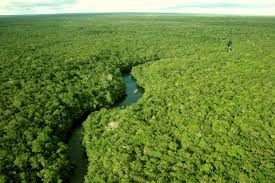
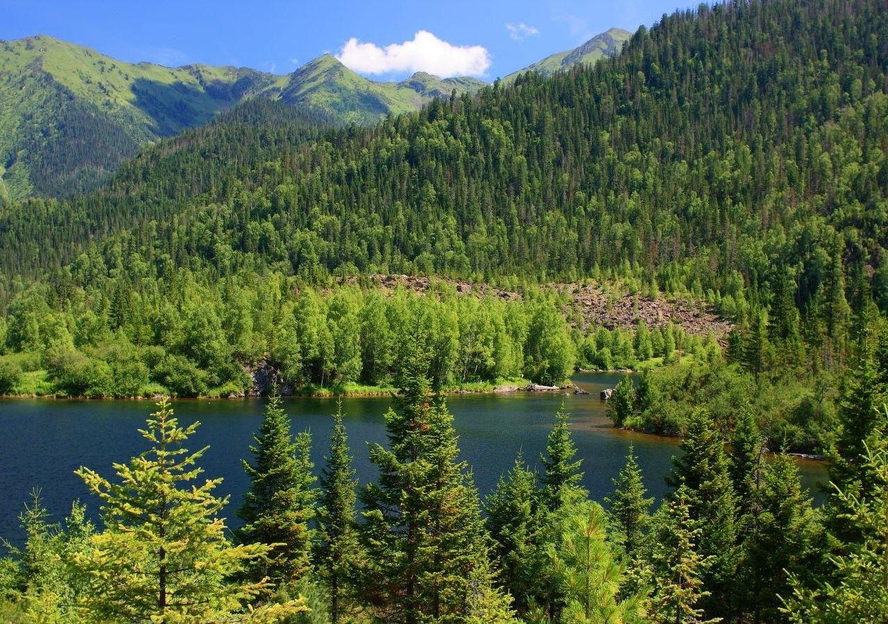
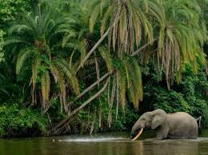
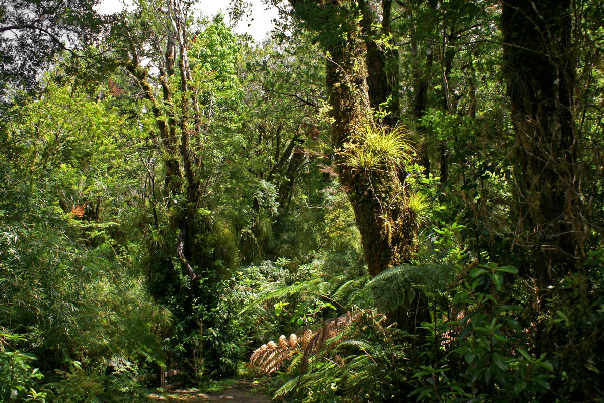
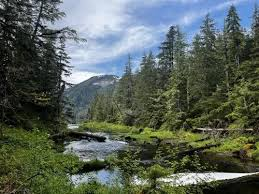

As maravilhas Verdes da Terra: Explorando as Maiores Florestas do mundo
As florestas, vastos ecossistemas que obrigam uma diversidade incrivel de vida, desenpenham um papel vital na saúde do planeta. Entre esses tesouros verdes, algumas se destacam como verdadeiras maravilhas da naureza,ocupando vastas extensões e oferecendo um lar único para uma infinidade de esécies. Mais informações Click aqui
A floresta Amazônica é, inquestionavelmente, a rainha das florestas. estendendo-se por aproximadamente 6,7 milhões de quilômentros quadrados, ela atravessa nove países sul-americanos inclindo o Brasil, Peru, Colômbia e Venezuela. além de sua biodiversidade extraordinária, a amazônia desempenha um papel crucial na regulação global,obsorvendo grandes quantidades de dióxido de carbono e produzindo oxogênio vital para a vida na Terra. mais informações Click aqui
A Taiga Siberiana, também conhecida como floresta boreal, se estende por vastas áreas da Rússia, Canadá, alasca e Escandinávia. com cerca de 10 milhões de quilômentros quadrados, essa floresta fria é adaptada para suportar invernos rigorosos, com árvores resistentes, como pinheiros e abetos. Apesar das condições extremas, a Taiga abriga uma varidade surpreendente de vida selvagem, inclindo alces, ursos e lobos. mais informações Click aqui
localizada na África central, a floresta do congo é a segunda maior floresta tropical do mundo, abrangendo aproximadamente 3,7 milhões de quilômentros quadrados. Esta exuberante floresta é o lar de uma incrível diversidade de espécies, incluindo gorilas, chimpanzés e elefantes. Infelizmente, enfrenta ameaças crescentes de desmatamento e atividades humanas, destacando a importãncia da conservação. mais informações Click aqui
a floresta Valdiviana, situada no sul do Chile e parte da Argentina,é uma das últimas florestas temperadas da Terra. embora relativamente pequeba em comparação com outras, cobrindo cerca de 248 mil quilômentros quadrados, essa floresta é única em sua riqueza de biodiversidade, com espécies endêmicas e uma paisagem deslunbrante de rios e lagos. mais informações Click aqui
a floresta Nacional Tongass, localizada no sudeste do Alasca, é a maior floresta temperada de chuvas do mundo, cobrindo aproximadamente69 mil quilômentros quadrados. Sua beleza cênica é acentuada por graciares, fiodes e uma íncrivel diversidade de vida selvagem, tornando-a um destino imperdível para os amantes da naureza. mais informações Click aqui
Essas florestas representam verdadeiros tesouros naturais, desempenhando papéis cruciais na manuntenção do equilibrio ecologico e na preservação da biodiversidade. No entanto, a pressão humana e as mudanças climaticas ameaçam esses ecossistemas preciosos, destacando a urgêcia da conservação e da gestão sustentavel para garantir que as maiores florestas do mundo continuem a prosperar para as gerações futuras.